Realistic NiaH V2：Bias 与 N、L 的经验 Law
1. Bias 与分析目标
对成功解析出整数的请求 \(i\)，定义 signed bias 与 absolute deviation：
\(b_i<0\) 表示漏计，\(b_i>0\) 表示过计。主拟合目标是在固定模型、mode、\(N\)、\(L\) 后对十个 seeds 求条件均值：
其中 \(m_{N,L}\le 10\)。Parse failure 没有数值 \(\widehat N\)，因此 bias 在数学上未定义；报告既不把它设为 0，也不删除其存在，而是在第一份报告中单列 parse coverage。Absolute-deviation law \(\overline{|b|}_{N,L}\) 是次级诊断，用于识别正负误差相互抵消的情形。
2. 有边界的候选 Law 搜索
为保持横纵轴和解释简单，候选变量只来自 \(N\)、\(L_k=L/1000\)、自然对数 \(\ln N\)、\(\ln L_k\)、\(N/L_k\)、\(\ln(N/L_k)\)、\(L_k/N\)、\(NL_k\)，以及低阶加法、一个交互项、一个预先固定断点（\(N=10\) 或 \(L_k=5\)）和至多二次项。没有逐点多项式、模型 ID 特征或事后删点。固定底数的对数在带自由斜率的线性模型中只会重标系数，因此本版统一使用自然对数，不重复保留等价的 \(\log_2\) 候选。
每个模型 × mode 单独搜索。每次留出一个 seed，使用其余九个 seeds 拟合并预测留出 seed；候选必须落在最低 seed-CV MSE 的 one-standard-error 集合内，再最大化“cell cross-fitted R² − 每个额外参数 0.015”的简洁性分数。报告同时给出 request-level OOF R²、leave-one-N-level-out 与 leave-one-L-level-out R²。F-test/FDR 仅作为探索性描述，因为公式经过选择，不能替代预注册确认实验。
除 \(R^2\) 外，本版加入四组拟合优度量。对 held-out 预测残差 \(e_i=y_i-\hat y_i\)，报告：
RMSE 强调少数大误差，MAE 给出平均相差多少个 needle，MedAE 对长尾更稳健，NRMSE/SD 用目标标准差无量纲化；当目标方差近零时 NRMSE 与 R² 都可能不稳定。训练内同时报告 adjusted R²、Gaussian cell-mean likelihood、SSE/deviance、AIC、AICc 与 BIC；AICc/BIC 只允许在同一模型 × mode、同一响应和同一批样本的候选间比较，不能跨 bias 与 bias/N 或跨模型直接排序。
稳定性由 seed-block bootstrap 衡量：表中“最弱斜率符号稳定率”是所有非截距系数中，bootstrap 与点估计保持同号比例的最小值；并记录有多少斜率的 95% 区间排除 0。残差诊断报告残差与 \(N,L\) 的最大绝对 Spearman \(|\rho|\)，以及 \(|e|\) 与 fitted value 的 Spearman \(\rho\)；前者较大提示遗漏曲率，后者较大提示异方差。显著性/FDR 不等同于拟合优度。
3. 29 个 Signed-bias Law
展开图 1：29 个所选 signed-bias law 的拟合优度

展开 29 个所选 signed-bias law 的样本外预测指标
| Model | Mode | Selected form | CV cell R² | CV cell RMSE | CV cell MAE | CV cell median AE | CV cell NRMSE/SD | Request OOF R² | Request OOF RMSE | Request OOF MAE | Leave-N-out R² | Leave-L-out R² | Fit class |
|---|---|---|---|---|---|---|---|---|---|---|---|---|---|
| Qwen3-1.7B | Direct | quadratic N + quadratic L | 0.666 | 2.872 | 2.011 | 1.348 | 0.572 | 0.069 | 11.494 | 5.349 | 0.582 | -2.138 | Moderate |
| Qwen3-1.7B | Index | N + ln L + N ln L | 0.831 | 9.311 | 6.626 | 4.888 | 0.408 | 0.343 | 28.376 | 20.012 | 0.764 | 0.787 | Strong |
| Qwen3-1.7B | Bullet | quadratic N + L | 0.934 | 1.596 | 0.970 | 0.550 | 0.254 | 0.600 | 5.077 | 2.404 | 0.885 | 0.882 | Strong |
| Qwen3-1.7B | Native Thinking | N + L + NL | 0.943 | 0.618 | 0.434 | 0.280 | 0.236 | 0.626 | 1.907 | 0.980 | 0.917 | 0.905 | Strong |
| Qwen3-4B | Direct | N | 0.752 | 1.036 | 0.574 | 0.285 | 0.493 | 0.293 | 2.318 | 1.254 | 0.684 | 0.585 | Moderate |
| Qwen3-4B | Index | quadratic N + L | 0.334 | 0.680 | 0.453 | 0.326 | 0.808 | -0.037 | 3.319 | 0.882 | 0.178 | 0.047 | Weak |
| Qwen3-4B | Bullet | N + quadratic L | 0.220 | 0.524 | 0.309 | 0.218 | 0.874 | -0.001 | 1.172 | 0.529 | 0.065 | -0.166 | Weak |
| Qwen3-4B | Native Thinking | N + L + NL | 0.845 | 0.188 | 0.103 | 0.029 | 0.390 | 0.127 | 0.943 | 0.248 | 0.767 | 0.521 | Strong |
| Qwen3-8B | Direct | N + quadratic L | 0.240 | 1.064 | 0.719 | 0.477 | 0.863 | -0.020 | 2.222 | 1.203 | 0 | -5.598 | Weak |
| Qwen3-8B | Index | N + L + NL | 0.862 | 0.096 | 0.061 | 0.027 | 0.368 | 0.155 | 0.455 | 0.146 | 0.764 | 0.537 | Strong |
| Qwen3-8B | Bullet | N + L + NL | 0.743 | 0.504 | 0.318 | 0.170 | 0.502 | 0.443 | 0.931 | 0.426 | -0.023 | 0.693 | Moderate |
| Qwen3-8B | Native Thinking | N + L + NL | 0.841 | 0.111 | 0.062 | 0.020 | 0.395 | 0.132 | 0.509 | 0.151 | 0.797 | 0.341 | Strong |
| Qwen3-32B | Direct | N | 0.903 | 0.788 | 0.542 | 0.368 | 0.308 | 0.656 | 1.724 | 0.998 | 0.893 | 0.868 | Strong |
| Qwen3-32B | Index | N + L + NL | 0.134 | 0.373 | 0.131 | 0.045 | 0.921 | -0.011 | 1.270 | 0.168 | -0.110 | -0.013 | Weak |
| Qwen3-32B | Bullet | N + ln L + N ln L | 0.850 | 0.214 | 0.148 | 0.092 | 0.383 | 0.321 | 0.686 | 0.308 | 0.571 | 0.829 | Strong |
| Qwen3-32B | Native Thinking | N + L + NL | 0.708 | 0.039 | 0.025 | 0.012 | 0.535 | 0.046 | 0.185 | 0.057 | 0.645 | -0.012 | Moderate |
| Gemma4-E4B | Direct | N + ln L + N ln L | 0.982 | 0.435 | 0.318 | 0.226 | 0.133 | 0.894 | 1.285 | 0.792 | 0.978 | 0.969 | Strong |
| Gemma4-E4B | Index | N + L + NL | 0.702 | 0.414 | 0.239 | 0.108 | 0.540 | 0.124 | 1.405 | 0.394 | 0.516 | 0.115 | Moderate |
| Gemma4-E4B | Bullet | N + L + NL | 0.932 | 0.267 | 0.169 | 0.082 | 0.259 | 0.538 | 0.891 | 0.419 | 0.899 | 0.813 | Strong |
| Gemma4-E4B | Native Thinking | N + L + NL | 0.875 | 0.386 | 0.212 | 0.076 | 0.350 | 0.385 | 1.209 | 0.462 | 0.839 | 0.197 | Strong |
| Gemma4-12B | Direct | N + ln L + N ln L | 0.981 | 0.447 | 0.366 | 0.354 | 0.138 | 0.939 | 0.808 | 0.609 | 0.962 | 0.978 | Strong |
| Gemma4-12B | Index | N + L + NL | 0.749 | 0.126 | 0.069 | 0.027 | 0.496 | 0.146 | 0.429 | 0.136 | 0.522 | -0.246 | Moderate |
| Gemma4-12B | Bullet | N + L + NL | 0.924 | 0.182 | 0.127 | 0.095 | 0.273 | 0.639 | 0.468 | 0.249 | 0.858 | 0.886 | Strong |
| Gemma4-12B | Native Thinking | N + L + NL | 0.821 | 0.273 | 0.137 | 0.050 | 0.419 | 0.481 | 0.534 | 0.231 | 0.734 | -0.139 | Strong |
| DeepSeek-R1-0528-Qwen3-8B | Native Thinking | N + L + NL | 0.321 | 1.598 | 0.896 | 0.349 | 0.816 | 0.017 | 5.178 | 1.497 | -0.119 | 0.157 | Weak |
| GLM-Z1-9B-0414 | Native Thinking | NL | 0.864 | 0.492 | 0.333 | 0.214 | 0.365 | 0.412 | 1.376 | 0.654 | 0.852 | 0.829 | Strong |
| GLM-4-9B-0414 | Direct | segmented N at 10 + ln L | 0.993 | 0.587 | 0.453 | 0.369 | 0.083 | 0.981 | 0.987 | 0.683 | 0.990 | 0.984 | Strong |
| GLM-4-9B-0414 | Index | quadratic N + quadratic L | 0.329 | 6.050 | 3.394 | 1.398 | 0.811 | 0.080 | 11.705 | 4.193 | 0.142 | -0.277 | Weak |
| GLM-4-9B-0414 | Bullet | N + ln L + N ln L | 0.943 | 0.778 | 0.534 | 0.314 | 0.236 | 0.780 | 1.365 | 0.813 | 0.841 | 0.922 | Strong |
展开 29 个所选 signed-bias law 的复杂度、稳定性与残差诊断
| Model | Mode | Selected form | Adjusted fit R² | Cell AICc | Cell BIC | Min slope sign stability | Slopes CI≠0 | Residual max |ρ(N,L)| | |residual|–fitted ρ | FDR q |
|---|---|---|---|---|---|---|---|---|---|---|
| Qwen3-1.7B | Direct | quadratic N + quadratic L | 0.637 | 261.35 | 270.87 | 0.807 | 3/4 | 0.181 | 0.003 | 3.83e-10 |
| Qwen3-1.7B | Index | N + ln L + N ln L | 0.819 | 376.61 | 384.81 | 1.000 | 3/3 | 0.026 | 0.175 | 1.85e-17 |
| Qwen3-1.7B | Bullet | quadratic N + L | 0.931 | 198.84 | 207.04 | 0.863 | 2/3 | 0.288 | 0.436 | 9.45e-27 |
| Qwen3-1.7B | Native Thinking | N + L + NL | 0.940 | 105.08 | 113.27 | 1.000 | 3/3 | 0.283 | -0.106 | 6.66e-28 |
| Qwen3-4B | Direct | N | 0.752 | 148.06 | 153.20 | 1.000 | 1/1 | 0.409 | -0.469 | 7.21e-16 |
| Qwen3-4B | Index | quadratic N + L | 0.290 | 114.67 | 122.86 | 0.767 | 1/3 | 0.198 | 0.312 | 3.53e-04 |
| Qwen3-4B | Bullet | N + quadratic L | 0.175 | 88.22 | 96.42 | 0.910 | 2/3 | 0.103 | -0.052 | 7.81e-03 |
| Qwen3-4B | Native Thinking | N + L + NL | 0.834 | -13.76 | -5.57 | 0.910 | 2/3 | 0.151 | -0.057 | 2.88e-18 |
| Qwen3-8B | Direct | N + quadratic L | 0.188 | 159.59 | 167.78 | 0.782 | 2/3 | 0.252 | -0.491 | 4.64e-03 |
| Qwen3-8B | Index | N + L + NL | 0.853 | -81.46 | -73.26 | 1.000 | 3/3 | 0.175 | 0.199 | 1.99e-19 |
| Qwen3-8B | Bullet | N + L + NL | 0.726 | 84.77 | 92.97 | 0.685 | 2/3 | 0.503 | -0.308 | 1.93e-13 |
| Qwen3-8B | Native Thinking | N + L + NL | 0.831 | -66.51 | -58.31 | 0.998 | 3/3 | 0.030 | -0.102 | 4.23e-18 |
| Qwen3-32B | Direct | N | 0.901 | 124.57 | 129.78 | 1.000 | 1/1 | 0.309 | 0.268 | 1.89e-25 |
| Qwen3-32B | Index | N + L + NL | 0.077 | 54.67 | 62.86 | 0.968 | 2/3 | 0.672 | 0.434 | 8.30e-02 |
| Qwen3-32B | Bullet | N + ln L + N ln L | 0.840 | -0.97 | 7.22 | 0.900 | 2/3 | 0.400 | 0.340 | 1.26e-18 |
| Qwen3-32B | Native Thinking | N + L + NL | 0.689 | -171.37 | -163.18 | 0.998 | 3/3 | 0.280 | 0.291 | 3.30e-12 |
| Gemma4-E4B | Direct | N + ln L + N ln L | 0.981 | 69.07 | 77.26 | 0.823 | 2/3 | 0.179 | -0.149 | 4.09e-39 |
| Gemma4-E4B | Index | N + L + NL | 0.682 | 65.16 | 73.36 | 0.943 | 2/3 | 0.216 | -0.061 | 4.98e-12 |
| Gemma4-E4B | Bullet | N + L + NL | 0.927 | 21.04 | 29.24 | 1.000 | 3/3 | 0.281 | -0.329 | 3.37e-26 |
| Gemma4-E4B | Native Thinking | N + L + NL | 0.867 | 58.12 | 66.32 | 1.000 | 3/3 | 0.198 | -0.341 | 2.28e-20 |
| Gemma4-12B | Direct | N + ln L + N ln L | 0.979 | 72.78 | 80.97 | 1.000 | 3/3 | 0.442 | 0.019 | 2.45e-38 |
| Gemma4-12B | Index | N + L + NL | 0.733 | -53.91 | -45.72 | 0.720 | 2/3 | 0.520 | -0.388 | 1.10e-13 |
| Gemma4-12B | Bullet | N + L + NL | 0.919 | -17.00 | -8.80 | 0.955 | 2/3 | 0.392 | -0.270 | 3.13e-25 |
| Gemma4-12B | Native Thinking | N + L + NL | 0.811 | 22.92 | 31.12 | 1.000 | 3/3 | 0.188 | -0.196 | 3.72e-17 |
| DeepSeek-R1-0528-Qwen3-8B | Native Thinking | N + L + NL | 0.278 | 199.99 | 208.19 | 0.698 | 2/3 | 0.442 | 0.310 | 4.60e-04 |
| GLM-Z1-9B-0414 | Native Thinking | NL | 0.862 | 77.21 | 82.43 | 1.000 | 1/1 | 0.358 | -0.223 | 5.17e-22 |
| GLM-4-9B-0414 | Direct | segmented N at 10 + ln L | 0.993 | 99.93 | 108.12 | 0.593 | 2/3 | 0.050 | -0.164 | 4.02e-48 |
| GLM-4-9B-0414 | Index | quadratic N + quadratic L | 0.274 | 335.58 | 345.09 | 1.000 | 4/4 | 0.168 | 0.421 | 1.01e-03 |
| GLM-4-9B-0414 | Bullet | N + ln L + N ln L | 0.940 | 128.15 | 136.35 | 1.000 | 3/3 | 0.554 | -0.232 | 4.10e-28 |
展开全部 29 条数值公式与 bootstrap 区间
Qwen3-1.7B · Direct · CV cell R²=0.666
候选形式：\(b=\alpha+\beta_1N+\beta_2N^2+\beta_3L_k+\beta_4L_k^2\)。\(L_k=L/1000\)。Seed-cross-fitted cell R²=0.666，RMSE=2.872，MAE=2.011，median AE=1.348，NRMSE/SD=0.572；request OOF R²=0.069；leave-N-out R²=0.582；leave-L-out R²=-2.138。训练内 adjusted R²=0.637，AICc=261.35，BIC=270.87；最弱斜率符号稳定率=0.807；探索性 FDR q=3.83e-10。
| Term | Estimate | Bootstrap 2.5% | Bootstrap 97.5% |
|---|---|---|---|
| intercept | -2.4615 | -6.6333 | 1.6251 |
| N | 0.2504 | -0.1656 | 0.7208 |
| N2 | -0.0188 | -0.0319 | -0.0066 |
| Lk | 1.1905 | 0.3344 | 1.9577 |
| Lk2 | -0.0369 | -0.0663 | -0.0052 |
Qwen3-1.7B · Index · CV cell R²=0.831
候选形式：\(b=\alpha+\beta_NN+\beta_L\ln L_k+\beta_{NL}N\ln L_k\)。\(L_k=L/1000\)。Seed-cross-fitted cell R²=0.831，RMSE=9.311，MAE=6.626，median AE=4.888，NRMSE/SD=0.408；request OOF R²=0.343；leave-N-out R²=0.764；leave-L-out R²=0.787。训练内 adjusted R²=0.819，AICc=376.61，BIC=384.81；最弱斜率符号稳定率=1.000；探索性 FDR q=1.85e-17。
| Term | Estimate | Bootstrap 2.5% | Bootstrap 97.5% |
|---|---|---|---|
| intercept | -24.5658 | -34.7757 | -13.3386 |
| N | 0.9257 | 0.4868 | 1.4022 |
| lnLk | 29.9690 | 24.8589 | 35.3267 |
| NlnLk | -1.1568 | -1.4892 | -0.8293 |
Qwen3-1.7B · Bullet · CV cell R²=0.934
候选形式：\(b=\alpha+\beta_1N+\beta_2N^2+\beta_LL_k\)。\(L_k=L/1000\)。Seed-cross-fitted cell R²=0.934，RMSE=1.596，MAE=0.970，median AE=0.550，NRMSE/SD=0.254；request OOF R²=0.600；leave-N-out R²=0.885；leave-L-out R²=0.882。训练内 adjusted R²=0.931，AICc=198.84，BIC=207.04；最弱斜率符号稳定率=0.863；探索性 FDR q=9.45e-27。
| Term | Estimate | Bootstrap 2.5% | Bootstrap 97.5% |
|---|---|---|---|
| intercept | 1.8855 | 0.8953 | 2.9663 |
| N | -0.5000 | -0.6889 | -0.3173 |
| N2 | 0.0372 | 0.0275 | 0.0459 |
| Lk | -0.0486 | -0.1345 | 0.0431 |
Qwen3-1.7B · Native Thinking · CV cell R²=0.943
候选形式：\(b=\alpha+\beta_NN+\beta_LL_k+\beta_{NL}NL_k\)。\(L_k=L/1000\)。Seed-cross-fitted cell R²=0.943，RMSE=0.618，MAE=0.434，median AE=0.280，NRMSE/SD=0.236；request OOF R²=0.626；leave-N-out R²=0.917；leave-L-out R²=0.905。训练内 adjusted R²=0.940，AICc=105.08，BIC=113.27；最弱斜率符号稳定率=1.000；探索性 FDR q=6.66e-28。
| Term | Estimate | Bootstrap 2.5% | Bootstrap 97.5% |
|---|---|---|---|
| intercept | 0.1815 | 0.0638 | 0.3130 |
| N | -0.0951 | -0.1390 | -0.0524 |
| Lk | 0.1173 | 0.0824 | 0.1603 |
| NLk | -0.0198 | -0.0258 | -0.0139 |
Qwen3-4B · Direct · CV cell R²=0.752
候选形式：\(b=\alpha+\beta_NN\)。\(L_k=L/1000\)。Seed-cross-fitted cell R²=0.752，RMSE=1.036，MAE=0.574，median AE=0.285，NRMSE/SD=0.493；request OOF R²=0.293；leave-N-out R²=0.684；leave-L-out R²=0.585。训练内 adjusted R²=0.752，AICc=148.06，BIC=153.20；最弱斜率符号稳定率=1.000；探索性 FDR q=7.21e-16。
| Term | Estimate | Bootstrap 2.5% | Bootstrap 97.5% |
|---|---|---|---|
| intercept | 0.6585 | 0.4188 | 0.9783 |
| N | -0.2187 | -0.2999 | -0.1402 |
Qwen3-4B · Index · CV cell R²=0.334
候选形式：\(b=\alpha+\beta_1N+\beta_2N^2+\beta_LL_k\)。\(L_k=L/1000\)。Seed-cross-fitted cell R²=0.334，RMSE=0.680，MAE=0.453，median AE=0.326，NRMSE/SD=0.808；request OOF R²=-0.037；leave-N-out R²=0.178；leave-L-out R²=0.047。训练内 adjusted R²=0.290，AICc=114.67，BIC=122.86；最弱斜率符号稳定率=0.767；探索性 FDR q=3.53e-04。
| Term | Estimate | Bootstrap 2.5% | Bootstrap 97.5% |
|---|---|---|---|
| intercept | 0.6119 | -0.1694 | 1.7983 |
| N | -0.1783 | -0.4200 | -0.0027 |
| N2 | 0.0064 | -0.0005 | 0.0152 |
| Lk | 0.0285 | -0.0231 | 0.1070 |
Qwen3-4B · Bullet · CV cell R²=0.220
候选形式：\(b=\alpha+\beta_NN+\beta_1L_k+\beta_2L_k^2\)。\(L_k=L/1000\)。Seed-cross-fitted cell R²=0.220，RMSE=0.524，MAE=0.309，median AE=0.218，NRMSE/SD=0.874；request OOF R²=-0.001；leave-N-out R²=0.065；leave-L-out R²=-0.166。训练内 adjusted R²=0.175，AICc=88.22，BIC=96.42；最弱斜率符号稳定率=0.910；探索性 FDR q=7.81e-03。
| Term | Estimate | Bootstrap 2.5% | Bootstrap 97.5% |
|---|---|---|---|
| intercept | -0.1728 | -0.3678 | -0.0066 |
| N | -0.0189 | -0.0438 | 0.0076 |
| Lk | 0.1296 | 0.0643 | 0.2147 |
| Lk2 | -0.0066 | -0.0109 | -0.0032 |
Qwen3-4B · Native Thinking · CV cell R²=0.845
候选形式：\(b=\alpha+\beta_NN+\beta_LL_k+\beta_{NL}NL_k\)。\(L_k=L/1000\)。Seed-cross-fitted cell R²=0.845，RMSE=0.188，MAE=0.103，median AE=0.029，NRMSE/SD=0.390；request OOF R²=0.127；leave-N-out R²=0.767；leave-L-out R²=0.521。训练内 adjusted R²=0.834，AICc=-13.76，BIC=-5.57；最弱斜率符号稳定率=0.910；探索性 FDR q=2.88e-18。
| Term | Estimate | Bootstrap 2.5% | Bootstrap 97.5% |
|---|---|---|---|
| intercept | -0.0977 | -0.2669 | 0.0679 |
| N | 0.0221 | -0.0095 | 0.0538 |
| Lk | 0.0252 | 0.0101 | 0.0414 |
| NLk | -0.0058 | -0.0088 | -0.0030 |
Qwen3-8B · Direct · CV cell R²=0.240
候选形式：\(b=\alpha+\beta_NN+\beta_1L_k+\beta_2L_k^2\)。\(L_k=L/1000\)。Seed-cross-fitted cell R²=0.240，RMSE=1.064，MAE=0.719，median AE=0.477，NRMSE/SD=0.863；request OOF R²=-0.020；leave-N-out R²=0.000；leave-L-out R²=-5.598。训练内 adjusted R²=0.188，AICc=159.59，BIC=167.78；最弱斜率符号稳定率=0.782；探索性 FDR q=4.64e-03。
| Term | Estimate | Bootstrap 2.5% | Bootstrap 97.5% |
|---|---|---|---|
| intercept | -0.2266 | -0.8793 | 0.3938 |
| N | -0.0309 | -0.0931 | 0.0265 |
| Lk | 0.1571 | 0.0135 | 0.3067 |
| Lk2 | -0.0101 | -0.0177 | -0.0031 |
Qwen3-8B · Index · CV cell R²=0.862
候选形式：\(b=\alpha+\beta_NN+\beta_LL_k+\beta_{NL}NL_k\)。\(L_k=L/1000\)。Seed-cross-fitted cell R²=0.862，RMSE=0.096，MAE=0.061，median AE=0.027，NRMSE/SD=0.368；request OOF R²=0.155；leave-N-out R²=0.764；leave-L-out R²=0.537。训练内 adjusted R²=0.853，AICc=-81.46，BIC=-73.26；最弱斜率符号稳定率=1.000；探索性 FDR q=1.99e-19。
| Term | Estimate | Bootstrap 2.5% | Bootstrap 97.5% |
|---|---|---|---|
| intercept | -0.0414 | -0.1028 | 0.0120 |
| N | 0.0148 | 0.0050 | 0.0267 |
| Lk | 0.0132 | 0.0041 | 0.0258 |
| NLk | -0.0033 | -0.0058 | -0.0013 |
Qwen3-8B · Bullet · CV cell R²=0.743
候选形式：\(b=\alpha+\beta_NN+\beta_LL_k+\beta_{NL}NL_k\)。\(L_k=L/1000\)。Seed-cross-fitted cell R²=0.743，RMSE=0.504，MAE=0.318，median AE=0.170，NRMSE/SD=0.502；request OOF R²=0.443；leave-N-out R²=-0.023；leave-L-out R²=0.693。训练内 adjusted R²=0.726，AICc=84.77，BIC=92.97；最弱斜率符号稳定率=0.685；探索性 FDR q=1.93e-13。
| Term | Estimate | Bootstrap 2.5% | Bootstrap 97.5% |
|---|---|---|---|
| intercept | 0.0177 | -0.1069 | 0.1617 |
| N | 0.0092 | -0.0216 | 0.0414 |
| Lk | 0.0426 | 0.0305 | 0.0561 |
| NLk | -0.0096 | -0.0129 | -0.0068 |
Qwen3-8B · Native Thinking · CV cell R²=0.841
候选形式：\(b=\alpha+\beta_NN+\beta_LL_k+\beta_{NL}NL_k\)。\(L_k=L/1000\)。Seed-cross-fitted cell R²=0.841，RMSE=0.111，MAE=0.062，median AE=0.020，NRMSE/SD=0.395；request OOF R²=0.132；leave-N-out R²=0.797；leave-L-out R²=0.341。训练内 adjusted R²=0.831，AICc=-66.51，BIC=-58.31；最弱斜率符号稳定率=0.998；探索性 FDR q=4.23e-18。
| Term | Estimate | Bootstrap 2.5% | Bootstrap 97.5% |
|---|---|---|---|
| intercept | -0.0574 | -0.1141 | -0.0134 |
| N | 0.0135 | 0.0039 | 0.0264 |
| Lk | 0.0151 | 0.0046 | 0.0281 |
| NLk | -0.0034 | -0.0062 | -0.0013 |
Qwen3-32B · Direct · CV cell R²=0.903
候选形式：\(b=\alpha+\beta_NN\)。\(L_k=L/1000\)。Seed-cross-fitted cell R²=0.903，RMSE=0.788，MAE=0.542，median AE=0.368，NRMSE/SD=0.308；request OOF R²=0.656；leave-N-out R²=0.893；leave-L-out R²=0.868。训练内 adjusted R²=0.901，AICc=124.57，BIC=129.78；最弱斜率符号稳定率=1.000；探索性 FDR q=1.89e-25。
| Term | Estimate | Bootstrap 2.5% | Bootstrap 97.5% |
|---|---|---|---|
| intercept | -0.9194 | -1.1100 | -0.7478 |
| N | 0.2759 | 0.2341 | 0.3207 |
Qwen3-32B · Index · CV cell R²=0.134
候选形式：\(b=\alpha+\beta_NN+\beta_LL_k+\beta_{NL}NL_k\)。\(L_k=L/1000\)。Seed-cross-fitted cell R²=0.134，RMSE=0.373，MAE=0.131，median AE=0.045，NRMSE/SD=0.921；request OOF R²=-0.011；leave-N-out R²=-0.110；leave-L-out R²=-0.013。训练内 adjusted R²=0.077，AICc=54.67，BIC=62.86；最弱斜率符号稳定率=0.968；探索性 FDR q=8.30e-02。
| Term | Estimate | Bootstrap 2.5% | Bootstrap 97.5% |
|---|---|---|---|
| intercept | -0.1232 | -0.3566 | 0.0025 |
| N | 0.0070 | 0 | 0.0178 |
| Lk | 0.0282 | 0.0014 | 0.0793 |
| NLk | -0.0018 | -0.0042 | 0 |
Qwen3-32B · Bullet · CV cell R²=0.850
候选形式：\(b=\alpha+\beta_NN+\beta_L\ln L_k+\beta_{NL}N\ln L_k\)。\(L_k=L/1000\)。Seed-cross-fitted cell R²=0.850，RMSE=0.214，MAE=0.148，median AE=0.092，NRMSE/SD=0.383；request OOF R²=0.321；leave-N-out R²=0.571；leave-L-out R²=0.829。训练内 adjusted R²=0.840，AICc=-0.97，BIC=7.22；最弱斜率符号稳定率=0.900；探索性 FDR q=1.26e-18。
| Term | Estimate | Bootstrap 2.5% | Bootstrap 97.5% |
|---|---|---|---|
| intercept | 0.0951 | -0.0165 | 0.2077 |
| N | -0.0160 | -0.0395 | 0.0065 |
| lnLk | -0.1798 | -0.2621 | -0.0940 |
| NlnLk | 0.0367 | 0.0209 | 0.0519 |
Qwen3-32B · Native Thinking · CV cell R²=0.708
候选形式：\(b=\alpha+\beta_NN+\beta_LL_k+\beta_{NL}NL_k\)。\(L_k=L/1000\)。Seed-cross-fitted cell R²=0.708，RMSE=0.039，MAE=0.025，median AE=0.012，NRMSE/SD=0.535；request OOF R²=0.046；leave-N-out R²=0.645；leave-L-out R²=-0.012。训练内 adjusted R²=0.689，AICc=-171.37，BIC=-163.18；最弱斜率符号稳定率=0.998；探索性 FDR q=3.30e-12。
| Term | Estimate | Bootstrap 2.5% | Bootstrap 97.5% |
|---|---|---|---|
| intercept | -0.0391 | -0.0646 | -0.0116 |
| N | 0.0038 | 0.0008 | 0.0072 |
| Lk | 0.0092 | 0.0029 | 0.0148 |
| NLk | -0.0009 | -0.0017 | 0 |
Gemma4-E4B · Direct · CV cell R²=0.982
候选形式：\(b=\alpha+\beta_NN+\beta_L\ln L_k+\beta_{NL}N\ln L_k\)。\(L_k=L/1000\)。Seed-cross-fitted cell R²=0.982，RMSE=0.435，MAE=0.318，median AE=0.226，NRMSE/SD=0.133；request OOF R²=0.894；leave-N-out R²=0.978；leave-L-out R²=0.969。训练内 adjusted R²=0.981，AICc=69.07，BIC=77.26；最弱斜率符号稳定率=0.823；探索性 FDR q=4.09e-39。
| Term | Estimate | Bootstrap 2.5% | Bootstrap 97.5% |
|---|---|---|---|
| intercept | -0.6336 | -1.2246 | -0.0345 |
| N | 0.0505 | -0.0435 | 0.1380 |
| lnLk | 0.8422 | 0.6028 | 1.0775 |
| NlnLk | -0.2072 | -0.2439 | -0.1678 |
Gemma4-E4B · Index · CV cell R²=0.702
候选形式：\(b=\alpha+\beta_NN+\beta_LL_k+\beta_{NL}NL_k\)。\(L_k=L/1000\)。Seed-cross-fitted cell R²=0.702，RMSE=0.414，MAE=0.239，median AE=0.108，NRMSE/SD=0.540；request OOF R²=0.124；leave-N-out R²=0.516；leave-L-out R²=0.115。训练内 adjusted R²=0.682，AICc=65.16，BIC=73.36；最弱斜率符号稳定率=0.943；探索性 FDR q=4.98e-12。
| Term | Estimate | Bootstrap 2.5% | Bootstrap 97.5% |
|---|---|---|---|
| intercept | -0.2343 | -0.6049 | 0.0078 |
| N | 0.0385 | 0.0189 | 0.0625 |
| Lk | 0.0478 | -0.0047 | 0.1257 |
| NLk | -0.0090 | -0.0143 | -0.0047 |
Gemma4-E4B · Bullet · CV cell R²=0.932
候选形式：\(b=\alpha+\beta_NN+\beta_LL_k+\beta_{NL}NL_k\)。\(L_k=L/1000\)。Seed-cross-fitted cell R²=0.932，RMSE=0.267，MAE=0.169，median AE=0.082，NRMSE/SD=0.259；request OOF R²=0.538；leave-N-out R²=0.899；leave-L-out R²=0.813。训练内 adjusted R²=0.927，AICc=21.04，BIC=29.24；最弱斜率符号稳定率=1.000；探索性 FDR q=3.37e-26。
| Term | Estimate | Bootstrap 2.5% | Bootstrap 97.5% |
|---|---|---|---|
| intercept | -0.2035 | -0.3359 | -0.1156 |
| N | 0.0565 | 0.0381 | 0.0771 |
| Lk | 0.0283 | 0.0156 | 0.0456 |
| NLk | -0.0125 | -0.0151 | -0.0099 |
Gemma4-E4B · Native Thinking · CV cell R²=0.875
候选形式：\(b=\alpha+\beta_NN+\beta_LL_k+\beta_{NL}NL_k\)。\(L_k=L/1000\)。Seed-cross-fitted cell R²=0.875，RMSE=0.386，MAE=0.212，median AE=0.076，NRMSE/SD=0.350；request OOF R²=0.385；leave-N-out R²=0.839；leave-L-out R²=0.197。训练内 adjusted R²=0.867，AICc=58.12，BIC=66.32；最弱斜率符号稳定率=1.000；探索性 FDR q=2.28e-20。
| Term | Estimate | Bootstrap 2.5% | Bootstrap 97.5% |
|---|---|---|---|
| intercept | -0.1680 | -0.3049 | -0.0677 |
| N | 0.0541 | 0.0314 | 0.0802 |
| Lk | 0.0257 | 0.0054 | 0.0507 |
| NLk | -0.0127 | -0.0186 | -0.0077 |
Gemma4-12B · Direct · CV cell R²=0.981
候选形式：\(b=\alpha+\beta_NN+\beta_L\ln L_k+\beta_{NL}N\ln L_k\)。\(L_k=L/1000\)。Seed-cross-fitted cell R²=0.981，RMSE=0.447，MAE=0.366，median AE=0.354，NRMSE/SD=0.138；request OOF R²=0.939；leave-N-out R²=0.962；leave-L-out R²=0.978。训练内 adjusted R²=0.979，AICc=72.78，BIC=80.97；最弱斜率符号稳定率=1.000；探索性 FDR q=2.45e-38。
| Term | Estimate | Bootstrap 2.5% | Bootstrap 97.5% |
|---|---|---|---|
| intercept | 0.5692 | 0.4055 | 0.6926 |
| N | -0.1228 | -0.1566 | -0.0897 |
| lnLk | 0.3186 | 0.2607 | 0.3725 |
| NlnLk | -0.1248 | -0.1366 | -0.1110 |
Gemma4-12B · Index · CV cell R²=0.749
候选形式：\(b=\alpha+\beta_NN+\beta_LL_k+\beta_{NL}NL_k\)。\(L_k=L/1000\)。Seed-cross-fitted cell R²=0.749，RMSE=0.126，MAE=0.069，median AE=0.027，NRMSE/SD=0.496；request OOF R²=0.146；leave-N-out R²=0.522；leave-L-out R²=-0.246。训练内 adjusted R²=0.733，AICc=-53.91，BIC=-45.72；最弱斜率符号稳定率=0.720；探索性 FDR q=1.10e-13。
| Term | Estimate | Bootstrap 2.5% | Bootstrap 97.5% |
|---|---|---|---|
| intercept | -0.0180 | -0.0614 | 0.0220 |
| N | 0.0115 | 0.0040 | 0.0209 |
| Lk | 0.0029 | -0.0057 | 0.0125 |
| NLk | -0.0026 | -0.0048 | -0.0009 |
Gemma4-12B · Bullet · CV cell R²=0.924
候选形式：\(b=\alpha+\beta_NN+\beta_LL_k+\beta_{NL}NL_k\)。\(L_k=L/1000\)。Seed-cross-fitted cell R²=0.924，RMSE=0.182，MAE=0.127，median AE=0.095，NRMSE/SD=0.273；request OOF R²=0.639；leave-N-out R²=0.858；leave-L-out R²=0.886。训练内 adjusted R²=0.919，AICc=-17.00，BIC=-8.80；最弱斜率符号稳定率=0.955；探索性 FDR q=3.13e-25。
| Term | Estimate | Bootstrap 2.5% | Bootstrap 97.5% |
|---|---|---|---|
| intercept | 0.1939 | 0.1473 | 0.2379 |
| N | -0.0400 | -0.0505 | -0.0280 |
| Lk | 0.0044 | -0.0006 | 0.0095 |
| NLk | -0.0033 | -0.0052 | -0.0016 |
Gemma4-12B · Native Thinking · CV cell R²=0.821
候选形式：\(b=\alpha+\beta_NN+\beta_LL_k+\beta_{NL}NL_k\)。\(L_k=L/1000\)。Seed-cross-fitted cell R²=0.821，RMSE=0.273，MAE=0.137，median AE=0.050，NRMSE/SD=0.419；request OOF R²=0.481；leave-N-out R²=0.734；leave-L-out R²=-0.139。训练内 adjusted R²=0.811，AICc=22.92，BIC=31.12；最弱斜率符号稳定率=1.000；探索性 FDR q=3.72e-17。
| Term | Estimate | Bootstrap 2.5% | Bootstrap 97.5% |
|---|---|---|---|
| intercept | -0.1074 | -0.1713 | -0.0520 |
| N | 0.0332 | 0.0214 | 0.0450 |
| Lk | 0.0226 | 0.0104 | 0.0364 |
| NLk | -0.0076 | -0.0104 | -0.0049 |
DeepSeek-R1-0528-Qwen3-8B · Native Thinking · CV cell R²=0.321
候选形式：\(b=\alpha+\beta_NN+\beta_LL_k+\beta_{NL}NL_k\)。\(L_k=L/1000\)。Seed-cross-fitted cell R²=0.321，RMSE=1.598，MAE=0.896，median AE=0.349，NRMSE/SD=0.816；request OOF R²=0.017；leave-N-out R²=-0.119；leave-L-out R²=0.157。训练内 adjusted R²=0.278，AICc=199.99，BIC=208.19；最弱斜率符号稳定率=0.698；探索性 FDR q=4.60e-04。
| Term | Estimate | Bootstrap 2.5% | Bootstrap 97.5% |
|---|---|---|---|
| intercept | -0.4484 | -1.2406 | 0.1974 |
| N | 0.0155 | -0.0361 | 0.0709 |
| Lk | 0.1709 | 0.0518 | 0.3216 |
| NLk | -0.0125 | -0.0205 | -0.0055 |
GLM-Z1-9B-0414 · Native Thinking · CV cell R²=0.864
候选形式：\(b=\alpha+\beta_PNL_k\)。\(L_k=L/1000\)。Seed-cross-fitted cell R²=0.864，RMSE=0.492，MAE=0.333，median AE=0.214，NRMSE/SD=0.365；request OOF R²=0.412；leave-N-out R²=0.852；leave-L-out R²=0.829。训练内 adjusted R²=0.862，AICc=77.21，BIC=82.43；最弱斜率符号稳定率=1.000；探索性 FDR q=5.17e-22。
| Term | Estimate | Bootstrap 2.5% | Bootstrap 97.5% |
|---|---|---|---|
| intercept | 0.3306 | 0.1751 | 0.4913 |
| NLk | -0.0115 | -0.0135 | -0.0090 |
GLM-4-9B-0414 · Direct · CV cell R²=0.993
候选形式：\(b=\alpha+\beta_NN+\beta_H(N-10)_++\beta_L\ln L_k\)。\(L_k=L/1000\)。Seed-cross-fitted cell R²=0.993，RMSE=0.587，MAE=0.453，median AE=0.369，NRMSE/SD=0.083；request OOF R²=0.981；leave-N-out R²=0.990；leave-L-out R²=0.984。训练内 adjusted R²=0.993，AICc=99.93，BIC=108.12；最弱斜率符号稳定率=0.593；探索性 FDR q=4.02e-48。
| Term | Estimate | Bootstrap 2.5% | Bootstrap 97.5% |
|---|---|---|---|
| intercept | 1.2165 | 0.9427 | 1.4998 |
| N | -0.5374 | -0.5741 | -0.4963 |
| (N-10)+ | -0.3717 | -0.4366 | -0.3137 |
| lnLk | -0.0174 | -0.1177 | 0.0795 |
GLM-4-9B-0414 · Index · CV cell R²=0.329
候选形式：\(b=\alpha+\beta_1N+\beta_2N^2+\beta_3L_k+\beta_4L_k^2\)。\(L_k=L/1000\)。Seed-cross-fitted cell R²=0.329，RMSE=6.050，MAE=3.394，median AE=1.398，NRMSE/SD=0.811；request OOF R²=0.080；leave-N-out R²=0.142；leave-L-out R²=-0.277。训练内 adjusted R²=0.274，AICc=335.58，BIC=345.09；最弱斜率符号稳定率=1.000；探索性 FDR q=1.01e-03。
| Term | Estimate | Bootstrap 2.5% | Bootstrap 97.5% |
|---|---|---|---|
| intercept | 4.5381 | 2.0258 | 7.0227 |
| N | -0.8121 | -1.3519 | -0.2765 |
| N2 | 0.0288 | 0.0100 | 0.0469 |
| Lk | -0.8957 | -1.2207 | -0.5296 |
| Lk2 | 0.0624 | 0.0329 | 0.0881 |
GLM-4-9B-0414 · Bullet · CV cell R²=0.943
候选形式：\(b=\alpha+\beta_NN+\beta_L\ln L_k+\beta_{NL}N\ln L_k\)。\(L_k=L/1000\)。Seed-cross-fitted cell R²=0.943，RMSE=0.778，MAE=0.534，median AE=0.314，NRMSE/SD=0.236；request OOF R²=0.780；leave-N-out R²=0.841；leave-L-out R²=0.922。训练内 adjusted R²=0.940，AICc=128.15，BIC=136.35；最弱斜率符号稳定率=1.000；探索性 FDR q=4.10e-28。
| Term | Estimate | Bootstrap 2.5% | Bootstrap 97.5% |
|---|---|---|---|
| intercept | -0.2448 | -0.3451 | -0.1285 |
| N | 0.0749 | 0.0449 | 0.0946 |
| lnLk | 0.8270 | 0.7251 | 0.9208 |
| NlnLk | -0.2153 | -0.2339 | -0.1910 |
Absolute deviation 的补充拟合
展开 29 个 absolute-deviation law 的拟合表
| Model | Mode | Selected |bias| form | CV cell R² | CV cell RMSE | CV cell MAE | CV cell median AE | CV cell NRMSE/SD | Request OOF R² | Leave-N-out R² | Leave-L-out R² | Adjusted fit R² | Cell AICc | Cell BIC | Min slope sign stability | Fit class |
|---|---|---|---|---|---|---|---|---|---|---|---|---|---|---|---|
| Qwen3-1.7B | Direct | N + ln L + N ln L | 0.763 | 2.669 | 1.625 | 0.859 | 0.482 | 0.173 | 0.712 | 0.736 | 0.748 | 251.42 | 259.62 | 0.870 | moderate |
| Qwen3-1.7B | Index | N + ln L + N ln L | 0.809 | 9.434 | 6.630 | 4.914 | 0.433 | 0.316 | 0.725 | 0.764 | 0.795 | 377.93 | 386.13 | 1.000 | strong |
| Qwen3-1.7B | Bullet | quadratic N + L | 0.943 | 1.507 | 0.918 | 0.514 | 0.236 | 0.651 | 0.838 | 0.898 | 0.941 | 192.94 | 201.14 | 0.632 | strong |
| Qwen3-1.7B | Native Thinking | N + ln L + N ln L | 0.890 | 0.825 | 0.520 | 0.393 | 0.328 | 0.601 | 0.822 | 0.876 | 0.883 | 133.97 | 142.16 | 0.855 | strong |
| Qwen3-4B | Direct | N + N/L | 0.910 | 0.668 | 0.391 | 0.199 | 0.296 | 0.605 | 0.902 | 0.833 | 0.906 | 108.47 | 115.13 | 0.940 | strong |
| Qwen3-4B | Index | N + L + NL | 0.609 | 0.855 | 0.493 | 0.178 | 0.619 | 0.029 | -0.199 | 0.400 | 0.584 | 137.56 | 145.76 | 0.805 | moderate |
| Qwen3-4B | Bullet | segmented N at 10 + ln L | 0.789 | 0.291 | 0.187 | 0.112 | 0.455 | 0.220 | 0.715 | 0.731 | 0.775 | 29.83 | 38.03 | 0.608 | moderate |
| Qwen3-4B | Native Thinking | N + L + NL | 0.750 | 0.274 | 0.147 | 0.070 | 0.495 | 0.172 | 0.569 | 0.602 | 0.734 | 23.74 | 31.93 | 0.500 | moderate |
| Qwen3-8B | Direct | N + L | 0.867 | 0.541 | 0.375 | 0.252 | 0.361 | 0.480 | 0.854 | 0.791 | 0.861 | 89.43 | 96.19 | 0.995 | strong |
| Qwen3-8B | Index | N + L + NL | 0.766 | 0.120 | 0.075 | 0.029 | 0.478 | 0.115 | 0.626 | 0.005 | 0.751 | -58.72 | -50.52 | 0.990 | moderate |
| Qwen3-8B | Bullet | N + L + NL | 0.775 | 0.483 | 0.317 | 0.190 | 0.470 | 0.514 | 0.118 | 0.758 | 0.760 | 80.51 | 88.71 | 0.958 | moderate |
| Qwen3-8B | Native Thinking | N + L + NL | 0.850 | 0.107 | 0.060 | 0.021 | 0.383 | 0.130 | 0.805 | 0.217 | 0.840 | -70.33 | -62.13 | 0.970 | strong |
| Qwen3-32B | Direct | N | 0.908 | 0.765 | 0.522 | 0.368 | 0.300 | 0.660 | 0.899 | 0.874 | 0.906 | 121.69 | 126.91 | 1.000 | strong |
| Qwen3-32B | Index | L | 0.098 | 0.375 | 0.133 | 0.037 | 0.940 | -0.009 | -0.080 | -0.009 | 0.079 | 50.42 | 55.64 | 0.998 | weak |
| Qwen3-32B | Bullet | N + ln L + N ln L | 0.855 | 0.244 | 0.176 | 0.128 | 0.377 | 0.481 | 0.513 | 0.841 | 0.845 | 12.18 | 20.38 | 0.665 | strong |
| Qwen3-32B | Native Thinking | N + L + NL | 0.547 | 0.045 | 0.029 | 0.011 | 0.666 | 0.013 | 0.357 | -0.048 | 0.518 | -157.49 | -149.29 | 0.840 | moderate |
| Gemma4-E4B | Direct | N + ln L + N ln L | 0.980 | 0.455 | 0.361 | 0.291 | 0.141 | 0.918 | 0.971 | 0.973 | 0.979 | 73.58 | 81.78 | 0.507 | strong |
| Gemma4-E4B | Index | N + L + NL | 0.694 | 0.394 | 0.264 | 0.134 | 0.547 | 0.094 | 0.619 | 0.047 | 0.674 | 60.04 | 68.24 | 0.705 | moderate |
| Gemma4-E4B | Bullet | NL | 0.933 | 0.268 | 0.194 | 0.148 | 0.257 | 0.586 | 0.929 | 0.876 | 0.931 | 16.74 | 21.96 | 1.000 | strong |
| Gemma4-E4B | Native Thinking | N + L + NL | 0.910 | 0.331 | 0.185 | 0.078 | 0.297 | 0.425 | 0.893 | 0.567 | 0.904 | 42.70 | 50.90 | 1.000 | strong |
| Gemma4-12B | Direct | N + ln L + N ln L | 0.980 | 0.448 | 0.368 | 0.328 | 0.139 | 0.939 | 0.961 | 0.978 | 0.979 | 72.85 | 81.05 | 1.000 | strong |
| Gemma4-12B | Index | N + L + NL | 0.749 | 0.126 | 0.069 | 0.027 | 0.496 | 0.146 | 0.522 | -0.246 | 0.733 | -53.91 | -45.72 | 0.720 | moderate |
| Gemma4-12B | Bullet | N + L + NL | 0.924 | 0.182 | 0.127 | 0.095 | 0.273 | 0.639 | 0.858 | 0.886 | 0.919 | -17.00 | -8.80 | 0.955 | strong |
| Gemma4-12B | Native Thinking | N + L + NL | 0.821 | 0.273 | 0.137 | 0.050 | 0.419 | 0.481 | 0.734 | -0.139 | 0.811 | 22.92 | 31.12 | 1.000 | strong |
| DeepSeek-R1-0528-Qwen3-8B | Native Thinking | NL | 0.600 | 1.374 | 0.702 | 0.359 | 0.626 | 0.094 | 0.499 | 0.580 | 0.592 | 180.11 | 185.33 | 1.000 | moderate |
| GLM-Z1-9B-0414 | Native Thinking | N + ln L + N ln L | 0.964 | 0.249 | 0.172 | 0.118 | 0.189 | 0.491 | 0.950 | 0.954 | 0.962 | 13.75 | 21.94 | 0.958 | strong |
| GLM-4-9B-0414 | Direct | segmented N at 10 + ln L | 0.994 | 0.557 | 0.424 | 0.333 | 0.079 | 0.983 | 0.991 | 0.986 | 0.993 | 94.83 | 103.02 | 0.920 | strong |
| GLM-4-9B-0414 | Index | N + L + NL | 0.394 | 5.687 | 2.750 | 0.739 | 0.770 | 0.111 | -0.562 | 0.183 | 0.362 | 326.49 | 334.69 | 0.860 | weak |
| GLM-4-9B-0414 | Bullet | N + ln L + N ln L | 0.933 | 0.840 | 0.584 | 0.363 | 0.257 | 0.768 | 0.815 | 0.914 | 0.929 | 135.68 | 143.87 | 0.998 | strong |
当 signed bias R² 很低但 \(|b|\) R² 较高时，主要机制不是“没有难度关系”，而是随着 N/L 变难，误差幅度增加但方向在不同 seeds 间正负抵消。Qwen3-8B Direct、Qwen3-4B Bullet/Index 是典型例子。
Raw bias 较弱时的 b/N fallback
按用户建议，只对 raw signed-bias CV R²<0.5 的单元追加相对偏差 \(r=b/N\) 与相对绝对偏差 \(|b|/N\) 搜索。该步骤不改变 raw-bias 主结果。
展开弱 raw-bias 单元的归一化候选比较表
| Model | Mode | Normalized target | Selected form | Raw-bias CV R² | Normalized CV R² | Leave-N-out R² | Leave-L-out R² |
|---|---|---|---|---|---|---|---|
| DeepSeek-R1-0528-Qwen3-8B | Native Thinking | mean b/N | N + L + NL | 0.321 | 0.273 | 0.071 | 0.036 |
| DeepSeek-R1-0528-Qwen3-8B | Native Thinking | mean |b|/N | L | 0.321 | 0.312 | 0.162 | 0.148 |
| GLM-4-9B-0414 | Index | mean b/N | L/N | 0.329 | 0.589 | -0.101 | -0.155 |
| GLM-4-9B-0414 | Index | mean |b|/N | L/N | 0.329 | 0.584 | -0.113 | -0.173 |
| Qwen3-32B | Index | mean b/N | N + L + NL | 0.134 | 0.098 | -0.162 | -0.051 |
| Qwen3-32B | Index | mean |b|/N | L | 0.134 | 0.072 | -0.112 | -0.034 |
| Qwen3-4B | Bullet | mean b/N | ln N + segmented L at 5k | 0.220 | 0.164 | -0.036 | -0.223 |
| Qwen3-4B | Bullet | mean |b|/N | ln N + segmented L at 5k | 0.220 | 0.069 | -0.197 | -0.519 |
| Qwen3-4B | Index | mean b/N | L/N | 0.334 | 0.494 | 0.432 | -0.081 |
| Qwen3-4B | Index | mean |b|/N | L/N | 0.334 | 0.483 | 0.420 | -0.082 |
| Qwen3-8B | Direct | mean b/N | ln N + ln L + interaction | 0.240 | 0.286 | -0.142 | -0.373 |
| Qwen3-8B | Direct | mean |b|/N | ln N + L | 0.240 | 0.461 | 0.265 | 0.422 |
展开图 2：弱 raw-bias 单元的 b/N 备选曲线
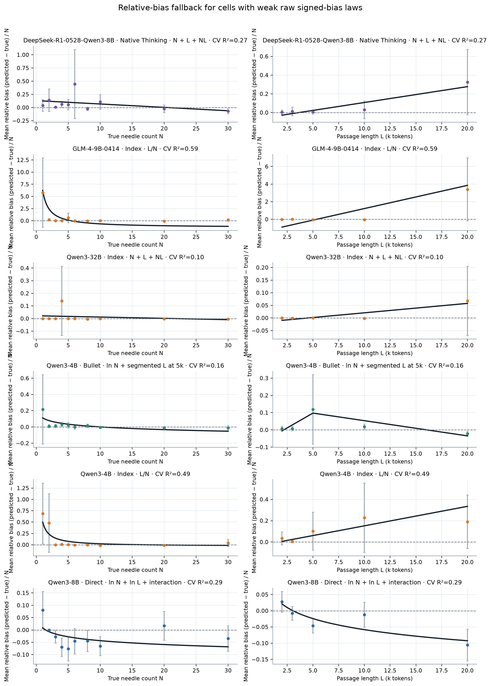
归一化最有帮助的是 GLM-4 Index：CV cell R² 从约 0.33 提升到约 0.59，说明其误差更接近“相对比例偏差”而非固定整数偏差。Qwen3-4B Index 提升到约 0.49，仍只到边界水平；其余弱单元没有因除以 N 而变成可靠 law。
预先指定的 log-linear density law
额外对全部 29 个模型 × mode 单元固定检验同一个两参数形式：
该检验不参与“挑选最好曲线”：每个单元都使用完全相同的响应、横轴和验证方式。它得到 0 个强、1 个中等、28 个弱拟合；斜率 bootstrap 区间、seed-CV、request OOF 以及 leave-N/L-out 指标全部保留。
展开图 3：固定 b/N–ln(N/L) law 的 29 单元拟合优度
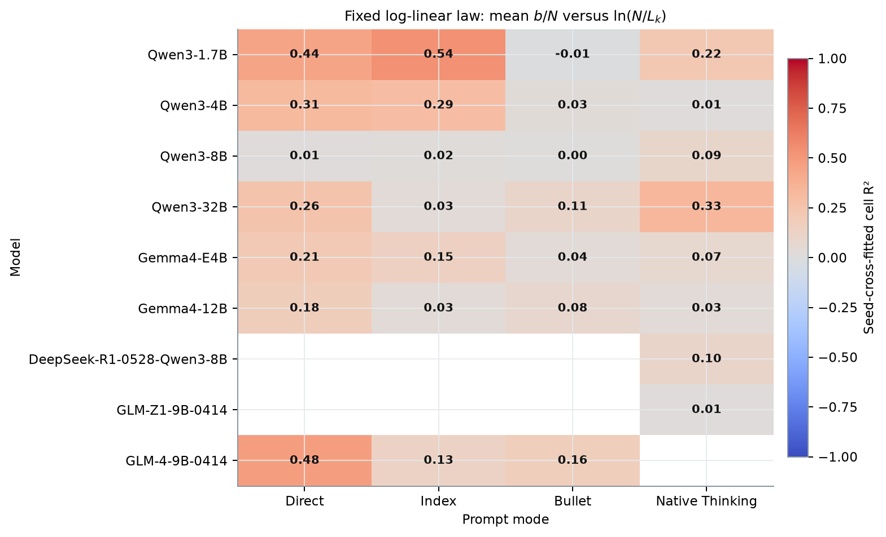
展开固定 log-linear density law 的 29 单元参数与验证表
| Model | Mode | Formula | CV cell R² | Request OOF R² | Leave-N-out R² | Leave-L-out R² | Slope 95% CI | FDR q | Fit class |
|---|---|---|---|---|---|---|---|---|---|
| Qwen3-1.7B | Direct | \(\overline{b/N}=0.844 - 0.755\ln(N/L_k)\) | 0.443 | 0.076 | 0.388 | 0.197 | -0.755 [-1.23, -0.377] | 1.29e-06 | Weak |
| Qwen3-1.7B | Index | \(\overline{b/N}=6 - 6.18\ln(N/L_k)\) | 0.538 | 0.247 | 0.423 | 0.359 | -6.18 [-7.95, -4.33] | 4.13e-08 | Moderate |
| Qwen3-1.7B | Bullet | \(\overline{b/N}=0.188 + 0.0409\ln(N/L_k)\) | -0.015 | -0.030 | -0.266 | -0.095 | 0.0409 [-0.039, 0.0946] | 3.41e-01 | Weak |
| Qwen3-1.7B | Native Thinking | \(\overline{b/N}=0.0365 - 0.193\ln(N/L_k)\) | 0.218 | 0.030 | -0.069 | 0.011 | -0.193 [-0.369, -0.0829] | 2.01e-03 | Weak |
| Qwen3-4B | Direct | \(\overline{b/N}=-0.0839 - 0.0399\ln(N/L_k)\) | 0.313 | 0.005 | 0.215 | 0.120 | -0.0399 [-0.0558, -0.0228] | 1.64e-04 | Weak |
| Qwen3-4B | Index | \(\overline{b/N}=0.115 - 0.136\ln(N/L_k)\) | 0.294 | -0.053 | 0.034 | 0.222 | -0.136 [-0.403, 0.00246] | 2.23e-04 | Weak |
| Qwen3-4B | Bullet | \(\overline{b/N}=0.0276 - 0.0219\ln(N/L_k)\) | 0.026 | -0.012 | -0.053 | -0.168 | -0.0219 [-0.0656, 0.0026] | 2.75e-01 | Weak |
| Qwen3-4B | Native Thinking | \(\overline{b/N}=-0.00487 - 0.00127\ln(N/L_k)\) | 0.008 | -0.005 | -0.040 | -0.164 | -0.00127 [-0.00353, 0.00157] | 5.73e-01 | Weak |
| Qwen3-8B | Direct | \(\overline{b/N}=-0.0306 + 0.0076\ln(N/L_k)\) | 0.010 | -0.035 | -0.285 | -0.113 | 0.0076 [-0.00694, 0.0209] | 5.10e-01 | Weak |
| Qwen3-8B | Index | \(\overline{b/N}=0.00137 - 0.00223\ln(N/L_k)\) | 0.022 | -0.022 | -0.173 | -0.255 | -0.00223 [-0.0111, 0.00451] | 3.43e-01 | Weak |
| Qwen3-8B | Bullet | \(\overline{b/N}=-0.00766 - 0.00149\ln(N/L_k)\) | 0.003 | -0.010 | -0.210 | -0.193 | -0.00149 [-0.0057, 0.0037] | 7.12e-01 | Weak |
| Qwen3-8B | Native Thinking | \(\overline{b/N}=-3.05e-06 - 0.00483\ln(N/L_k)\) | 0.095 | -0.007 | -0.037 | -0.028 | -0.00483 [-0.0119, 0.000155] | 5.35e-02 | Weak |
| Qwen3-32B | Direct | \(\overline{b/N}=0.0896 + 0.0398\ln(N/L_k)\) | 0.256 | 0.118 | 0.118 | -0.140 | 0.0398 [0.0272, 0.0542] | 7.30e-04 | Weak |
| Qwen3-32B | Index | \(\overline{b/N}=0.0128 - 0.0141\ln(N/L_k)\) | 0.033 | -0.007 | -0.095 | -0.064 | -0.0141 [-0.0419, -5.06e-05] | 2.75e-01 | Weak |
| Qwen3-32B | Bullet | \(\overline{b/N}=0.00832 + 0.00509\ln(N/L_k)\) | 0.109 | 0.034 | -0.034 | -0.109 | 0.00509 [0.00263, 0.00779] | 4.01e-02 | Weak |
| Qwen3-32B | Native Thinking | \(\overline{b/N}=0.00689 - 0.0106\ln(N/L_k)\) | 0.331 | 0.018 | 0.153 | 0.065 | -0.0106 [-0.0192, -0.00316] | 8.83e-05 | Weak |
| Gemma4-E4B | Direct | \(\overline{b/N}=-0.114 - 0.0633\ln(N/L_k)\) | 0.205 | 0.182 | 0.094 | -0.121 | -0.0633 [-0.0797, -0.0446] | 8.91e-04 | Weak |
| Gemma4-E4B | Index | \(\overline{b/N}=0.0356 - 0.0881\ln(N/L_k)\) | 0.148 | -0.028 | -0.037 | -0.209 | -0.0881 [-0.277, 0.00832] | 1.42e-02 | Weak |
| Gemma4-E4B | Bullet | \(\overline{b/N}=-0.0307 + 0.00848\ln(N/L_k)\) | 0.036 | 0.007 | -0.103 | -0.223 | 0.00848 [0.0058, 0.0118] | 2.75e-01 | Weak |
| Gemma4-E4B | Native Thinking | \(\overline{b/N}=-0.0347 + 0.0127\ln(N/L_k)\) | 0.075 | 0.018 | -0.107 | -0.190 | 0.0127 [0.00926, 0.0168] | 8.79e-02 | Weak |
| Gemma4-12B | Direct | \(\overline{b/N}=-0.11 - 0.0425\ln(N/L_k)\) | 0.179 | 0.133 | 0.040 | -0.141 | -0.0425 [-0.0509, -0.034] | 6.46e-03 | Weak |
| Gemma4-12B | Index | \(\overline{b/N}=-0.00629 + 0.00227\ln(N/L_k)\) | 0.032 | 0.001 | -0.077 | -0.260 | 0.00227 [0.000691, 0.00386] | 2.75e-01 | Weak |
| Gemma4-12B | Bullet | \(\overline{b/N}=-0.02 - 0.00655\ln(N/L_k)\) | 0.083 | 0.023 | -0.069 | -0.279 | -0.00655 [-0.00898, -0.00334] | 7.28e-02 | Weak |
| Gemma4-12B | Native Thinking | \(\overline{b/N}=-0.0126 + 0.0042\ln(N/L_k)\) | 0.032 | 0.007 | -0.085 | -0.265 | 0.0042 [0.00186, 0.00714] | 2.75e-01 | Weak |
| DeepSeek-R1-0528-Qwen3-8B | Native Thinking | \(\overline{b/N}=0.0734 - 0.0688\ln(N/L_k)\) | 0.103 | 0.002 | -0.023 | -0.112 | -0.0688 [-0.132, -0.0168] | 4.32e-02 | Weak |
| GLM-Z1-9B-0414 | Native Thinking | \(\overline{b/N}=-0.0177 - 0.00962\ln(N/L_k)\) | 0.015 | -0.013 | -0.098 | -0.124 | -0.00962 [-0.0221, 0.00441] | 3.43e-01 | Weak |
| GLM-4-9B-0414 | Direct | \(\overline{b/N}=-0.303 - 0.14\ln(N/L_k)\) | 0.475 | 0.348 | 0.359 | 0.246 | -0.14 [-0.154, -0.125] | 4.48e-07 | Weak |
| GLM-4-9B-0414 | Index | \(\overline{b/N}=0.687 - 1.2\ln(N/L_k)\) | 0.129 | 0.010 | -0.103 | -0.145 | -1.2 [-2.35, -0.244] | 2.17e-02 | Weak |
| GLM-4-9B-0414 | Bullet | \(\overline{b/N}=-0.0598 - 0.052\ln(N/L_k)\) | 0.165 | 0.025 | 0.075 | -0.040 | -0.052 [-0.106, -0.0228] | 6.63e-03 | Weak |
每个模型的折叠图把这条固定 law 放在第三列，因此可以同时比较“自由选择的 raw-bias 二维曲面”和“统一横轴的相对偏差直线”。若某一格 R² 很低，报告保留该负结果，不通过更换坐标继续追逐拟合。
4. 各模型、各 Mode 的散点与拟合曲线
Qwen3-1.7B：展开各 mode 散点与拟合曲线
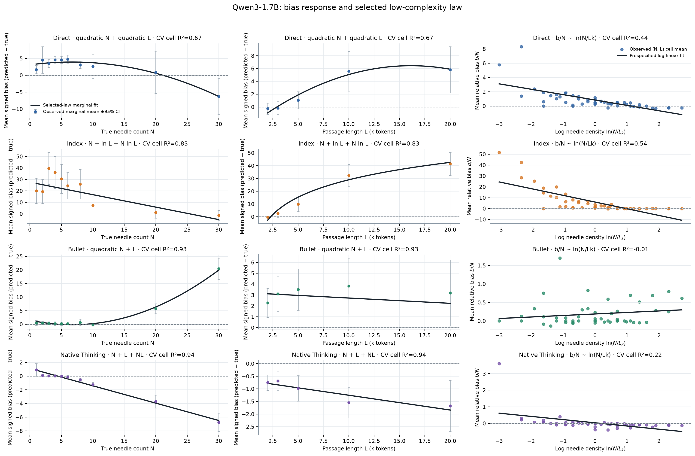
Qwen3-4B：展开各 mode 散点与拟合曲线
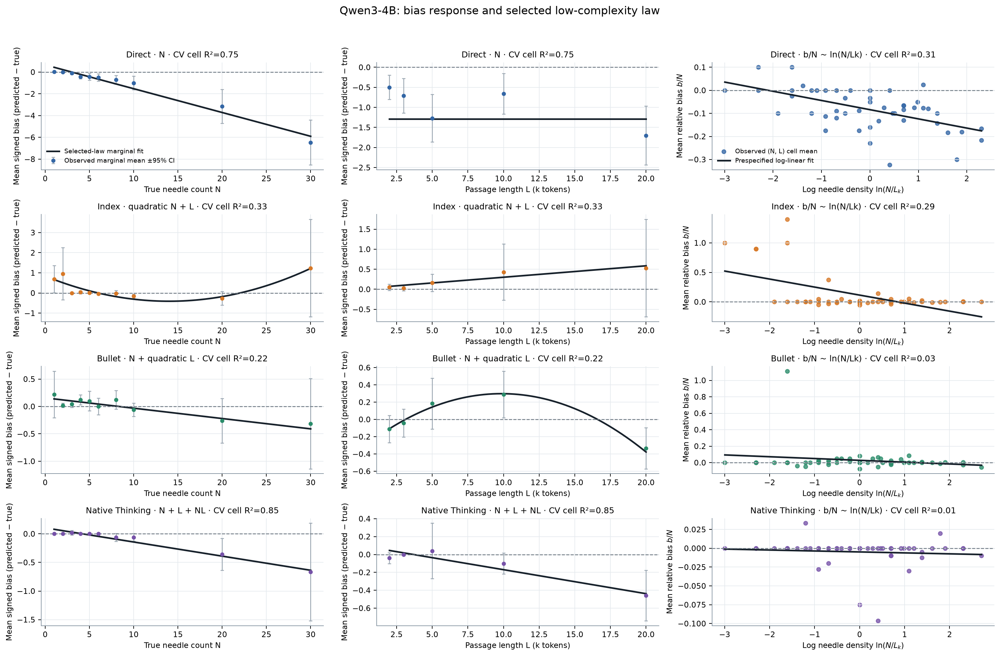
Qwen3-8B：展开各 mode 散点与拟合曲线
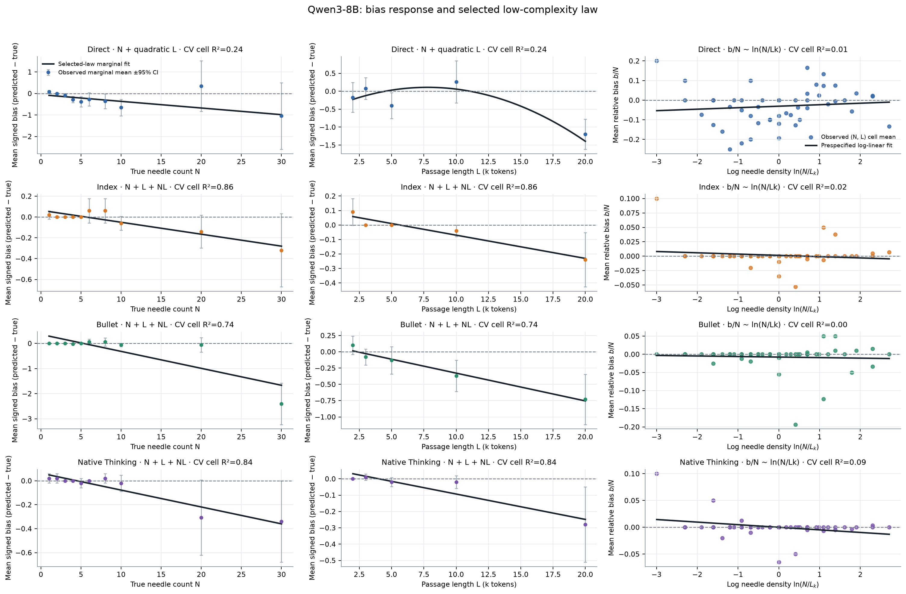
Qwen3-32B：展开各 mode 散点与拟合曲线
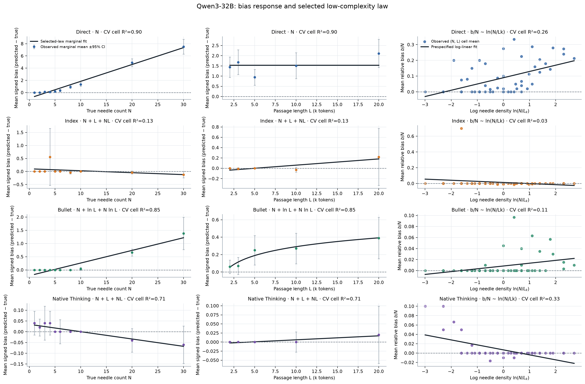
Gemma4-E4B：展开各 mode 散点与拟合曲线
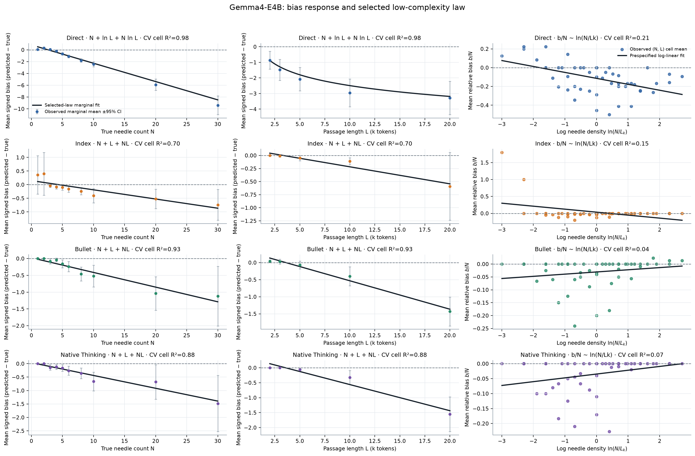
Gemma4-12B：展开各 mode 散点与拟合曲线
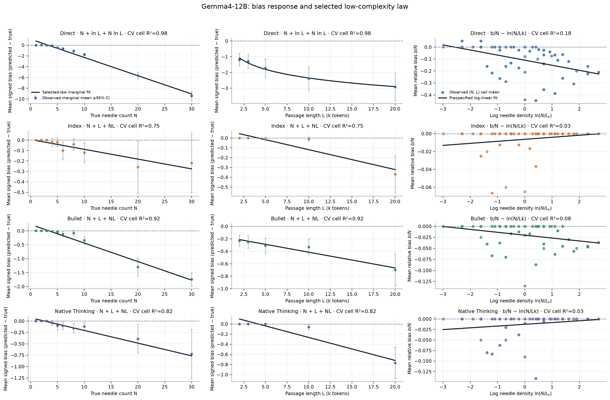
DeepSeek-R1-0528-Qwen3-8B：展开各 mode 散点与拟合曲线
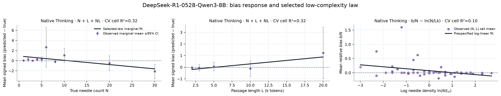
GLM-Z1-9B-0414：展开各 mode 散点与拟合曲线
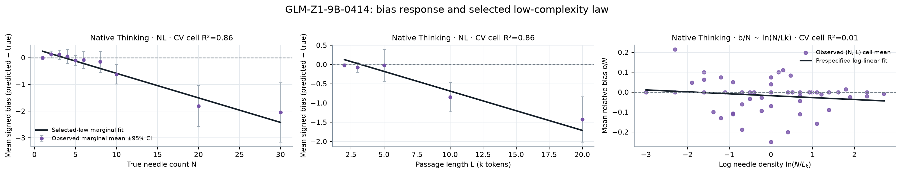
GLM-4-9B-0414：展开各 mode 散点与拟合曲线
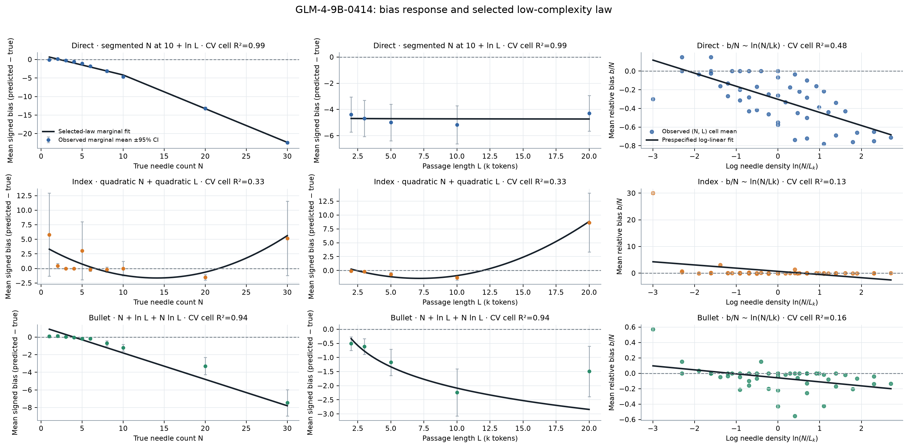
5. 是否存在普适形式？
5.1 “普适”的操作定义与选模规则
这里的“普适 law”不是强迫所有模型共享数值系数，而是要求同一 mode family 使用相同特征映射 \(g(N,L)\)，同时允许每个模型（Enumerate 还允许 Index/Bullet）拥有独立参数。Direct 覆盖 7 个模型单元；Enumerate 覆盖同一 7 个模型的 Index 与 Bullet，共 14 个单元。Signed bias 与 absolute deviation 分别选择，不能用后者掩盖前者。
共同形式按预先固定的稳健次序选择：先最大化 CV cell R²≥0.5 的覆盖单元数；将 median CV R² 相差不超过 0.02 的候选视为实际并列；再最大化 CV R² 的下四分位数，随后比较 leave-\(N/L\)-out 与参数数目。这个规则避免由单个极端模型或平均值主导选模。
展开 Direct/Enumerate 普适候选的前六名比较
| Family | Target | Candidate | Coverage | Median CV R² | Q25 CV R² | Minimum CV R² | Median leave-N R² | Median leave-L R² |
|---|---|---|---|---|---|---|---|---|
| Direct | Absolute deviation | N + L + NL | 7/7 | 0.934 | 0.890 | 0.746 | 0.905 | 0.752 |
| Direct | Absolute deviation | N + ln L + N ln L | 7/7 | 0.925 | 0.891 | 0.763 | 0.902 | 0.867 |
| Direct | Absolute deviation | N + L + N/L | 7/7 | 0.919 | 0.890 | 0.756 | 0.902 | 0.857 |
| Direct | Absolute deviation | N + N/L | 7/7 | 0.916 | 0.884 | 0.682 | 0.902 | 0.861 |
| Direct | Absolute deviation | segmented N at 10 + segmented L at 5k | 7/7 | 0.900 | 0.832 | 0.718 | 0.881 | 0.793 |
| Direct | Absolute deviation | segmented N at 10 + ln L | 7/7 | 0.899 | 0.834 | 0.721 | 0.882 | 0.828 |
| Direct | Signed bias | N + L + NL | 6/7 | 0.929 | 0.654 | 0.214 | 0.899 | 0.660 |
| Direct | Signed bias | N + ln L + N ln L | 6/7 | 0.920 | 0.666 | 0.114 | 0.889 | 0.858 |
| Direct | Signed bias | N + L + N/L | 6/7 | 0.915 | 0.659 | 0.205 | 0.883 | 0.849 |
| Direct | Signed bias | quadratic N + quadratic L | 6/7 | 0.794 | 0.707 | 0.243 | 0.724 | 0.060 |
| Direct | Signed bias | quadratic N + L | 6/7 | 0.776 | 0.681 | 0.180 | 0.721 | 0.508 |
| Direct | Signed bias | segmented N at 10 + segmented L at 5k | 6/7 | 0.776 | 0.675 | 0.187 | 0.742 | 0.551 |
| Enumerate | Absolute deviation | N + ln L + N ln L | 12/14 | 0.771 | 0.535 | 0.072 | 0.473 | 0.617 |
| Enumerate | Absolute deviation | N + L + NL | 12/14 | 0.770 | 0.708 | 0.099 | 0.510 | 0.519 |
| Enumerate | Absolute deviation | NL | 10/14 | 0.614 | 0.408 | -0.004 | 0.379 | 0.136 |
| Enumerate | Absolute deviation | N + L + N/L | 9/14 | 0.681 | 0.410 | 0.100 | 0.411 | 0.055 |
| Enumerate | Absolute deviation | quadratic N + quadratic L | 9/14 | 0.641 | 0.405 | 0.114 | 0.408 | 0.071 |
| Enumerate | Absolute deviation | quadratic N + L | 9/14 | 0.621 | 0.388 | 0.100 | 0.384 | 0.223 |
| Enumerate | Signed bias | N + L + NL | 10/14 | 0.763 | 0.390 | 0.111 | 0.519 | 0.399 |
| Enumerate | Signed bias | N + ln L + N ln L | 10/14 | 0.736 | 0.271 | 0.073 | 0.399 | 0.190 |
| Enumerate | Signed bias | NL | 8/14 | 0.635 | 0.156 | 0.004 | 0.196 | 0.046 |
| Enumerate | Signed bias | N + L + N/L | 8/14 | 0.571 | 0.239 | 0.105 | 0.304 | -0.150 |
| Enumerate | Signed bias | ln N + ln L + interaction | 8/14 | 0.525 | 0.195 | 0.060 | 0.120 | 0.192 |
| Enumerate | Signed bias | N + N/L | 7/14 | 0.452 | 0.133 | 0.028 | 0.282 | -0.106 |
5.2 Direct：误差幅度有普适 law，signed bias 为近普适
Direct 的 signed bias 与 absolute deviation 都选中同一自然对数交互形式：
对 signed bias，形式为 \(\bar b_{D,m}=g_{D,m}\)：覆盖 6/7 个模型达到 CV R²≥0.5，median CV R²=0.920，下四分位数=0.666；Qwen3-8B Direct 是弱拟合例外，因此不能称为“七个模型无例外”的 signed-bias law。对 absolute deviation，另用一套模型参数拟合 \(\overline{|b|}_{D,m}=g^{(|b|)}_{D,m}\)：7/7 达到中等以上、6/7 达到强拟合，median CV R²=0.925，最低仍为 0.763。
5.3 Enumerate：最佳共同形状为双线性，但 Index 存在明确例外
把 Index 与 Bullet 视为同一 Enumerate family、但保留模型 × 格式各自参数后，signed bias 和 absolute deviation 都选择：
Signed bias 覆盖 10/14 个单元达到 CV R²≥0.5，median=0.763；absolute deviation 覆盖 12/14，median=0.770。Bullet 的 absolute-deviation 版本在 7/7 模型达到中等以上；主要例外集中在 Index：Qwen3-32B Index 与 GLM-4 Index 的 absolute-deviation CV R² 分别约 0.10 与 0.39，signed bias 还包括 Qwen3-4B Index，以及 Qwen3-4B Bullet 的方向性例外。
展开图 5：Direct/Enumerate 普适形式的逐单元 CV R²
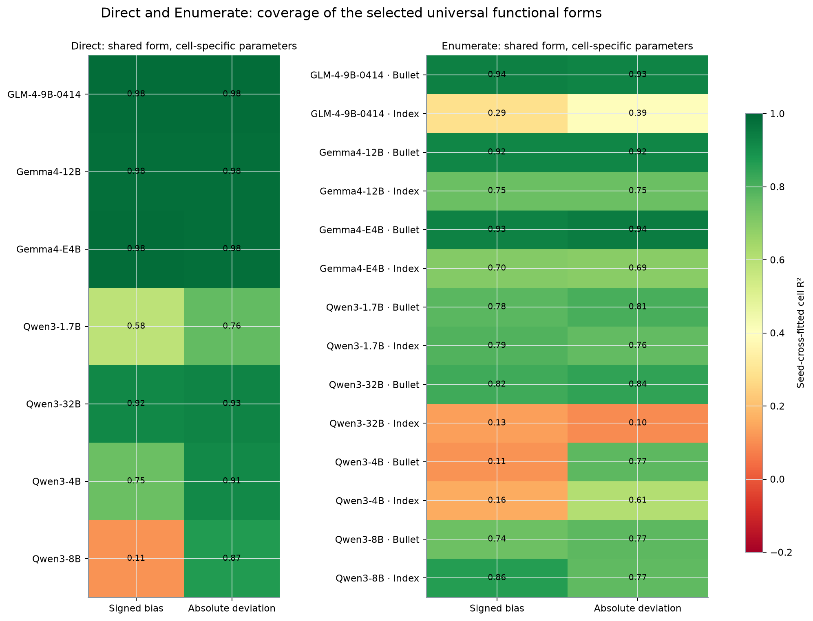
展开图 6：普适形式的观测值与 held-out-seed 预测
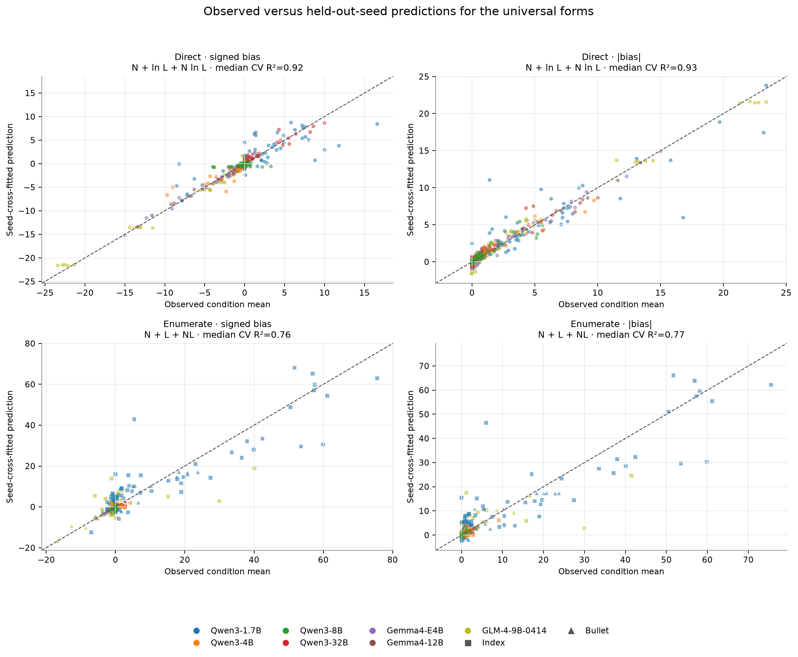
展开 Direct/Enumerate 所选普适 law 的汇总指标
| Family | Target | Shared form | Coverage R²≥0.5 | Strong R²≥0.8 | Median CV R² | Q25 CV R² | Minimum CV R² | Median CV RMSE | Median CV MAE | Median CV median AE | Median CV NRMSE/SD | Median leave-N R² | Median leave-L R² | Median min sign stability |
|---|---|---|---|---|---|---|---|---|---|---|---|---|---|---|
| Direct | Mean absolute deviation | N + ln L + N ln L | 7/7 | 6/7 | 0.925 | 0.891 | 0.763 | 0.652 | 0.379 | 0.328 | 0.271 | 0.902 | 0.867 | 0.738 |
| Direct | Mean signed bias | N + ln L + N ln L | 6/7 | 4/7 | 0.920 | 0.666 | 0.114 | 0.929 | 0.569 | 0.351 | 0.280 | 0.889 | 0.858 | 0.740 |
| Enumerate | Mean absolute deviation | N + L + NL | 12/14 | 5/14 | 0.770 | 0.708 | 0.099 | 0.384 | 0.233 | 0.133 | 0.474 | 0.510 | 0.519 | 0.896 |
| Enumerate | Mean signed bias | N + L + NL | 10/14 | 5/14 | 0.763 | 0.390 | 0.111 | 0.459 | 0.255 | 0.112 | 0.482 | 0.519 | 0.399 | 0.870 |
展开 Direct/Enumerate 所选普适 law 的全部 42 个单元诊断
| Family | Model | Mode | Target | CV R² | CV RMSE | CV MAE | CV median AE | CV NRMSE/SD | Leave-N R² | Leave-L R² | Adjusted fit R² | AICc | BIC | Min sign stability |
|---|---|---|---|---|---|---|---|---|---|---|---|---|---|---|
| Direct | GLM-4-9B-0414 | Direct | Absolute deviation | 0.983 | 0.923 | 0.759 | 0.707 | 0.131 | 0.962 | 0.972 | 0.981 | 145.23 | 153.42 | 0.590 |
| Direct | Gemma4-12B | Direct | Absolute deviation | 0.980 | 0.448 | 0.368 | 0.328 | 0.139 | 0.961 | 0.978 | 0.979 | 72.85 | 81.05 | 1.000 |
| Direct | Gemma4-E4B | Direct | Absolute deviation | 0.980 | 0.455 | 0.361 | 0.291 | 0.141 | 0.971 | 0.973 | 0.979 | 73.58 | 81.78 | 0.507 |
| Direct | Qwen3-1.7B | Direct | Absolute deviation | 0.763 | 2.669 | 1.625 | 0.859 | 0.482 | 0.712 | 0.736 | 0.748 | 251.42 | 259.62 | 0.870 |
| Direct | Qwen3-32B | Direct | Absolute deviation | 0.925 | 0.692 | 0.480 | 0.341 | 0.271 | 0.895 | 0.867 | 0.920 | 116.39 | 124.59 | 0.738 |
| Direct | Qwen3-4B | Direct | Absolute deviation | 0.915 | 0.652 | 0.379 | 0.183 | 0.289 | 0.902 | 0.809 | 0.908 | 109.05 | 117.11 | 0.725 |
| Direct | Qwen3-8B | Direct | Absolute deviation | 0.868 | 0.539 | 0.357 | 0.208 | 0.360 | 0.741 | 0.743 | 0.859 | 91.50 | 99.70 | 0.825 |
| Direct | GLM-4-9B-0414 | Direct | Signed bias | 0.983 | 0.929 | 0.749 | 0.642 | 0.131 | 0.963 | 0.971 | 0.981 | 145.88 | 154.08 | 0.585 |
| Direct | Gemma4-12B | Direct | Signed bias | 0.981 | 0.447 | 0.366 | 0.354 | 0.138 | 0.962 | 0.978 | 0.979 | 72.78 | 80.97 | 1.000 |
| Direct | Gemma4-E4B | Direct | Signed bias | 0.982 | 0.435 | 0.318 | 0.226 | 0.133 | 0.978 | 0.969 | 0.981 | 69.07 | 77.26 | 0.823 |
| Direct | Qwen3-1.7B | Direct | Signed bias | 0.584 | 3.207 | 2.256 | 1.384 | 0.639 | 0.198 | 0.366 | 0.557 | 269.81 | 278.00 | 0.470 |
| Direct | Qwen3-32B | Direct | Signed bias | 0.920 | 0.717 | 0.500 | 0.351 | 0.280 | 0.889 | 0.858 | 0.915 | 119.96 | 128.16 | 0.757 |
| Direct | Qwen3-4B | Direct | Signed bias | 0.748 | 1.045 | 0.569 | 0.261 | 0.497 | 0.677 | 0.225 | 0.740 | 153.07 | 161.13 | 0.740 |
| Direct | Qwen3-8B | Direct | Signed bias | 0.114 | 1.149 | 0.684 | 0.318 | 0.932 | -0.201 | -1.740 | 0.047 | 167.62 | 175.82 | 0.613 |
| Enumerate | GLM-4-9B-0414 | Bullet | Absolute deviation | 0.927 | 0.878 | 0.574 | 0.386 | 0.268 | 0.804 | 0.786 | 0.922 | 140.08 | 148.28 | 1.000 |
| Enumerate | GLM-4-9B-0414 | Index | Absolute deviation | 0.394 | 5.687 | 2.750 | 0.739 | 0.770 | -0.562 | 0.183 | 0.362 | 326.49 | 334.69 | 0.860 |
| Enumerate | Gemma4-12B | Bullet | Absolute deviation | 0.924 | 0.182 | 0.127 | 0.095 | 0.273 | 0.858 | 0.886 | 0.919 | -17.00 | -8.80 | 0.955 |
| Enumerate | Gemma4-12B | Index | Absolute deviation | 0.749 | 0.126 | 0.069 | 0.027 | 0.496 | 0.522 | -0.246 | 0.733 | -53.91 | -45.72 | 0.720 |
| Enumerate | Gemma4-E4B | Bullet | Absolute deviation | 0.945 | 0.243 | 0.156 | 0.081 | 0.233 | 0.905 | 0.902 | 0.941 | 11.87 | 20.07 | 0.990 |
| Enumerate | Gemma4-E4B | Index | Absolute deviation | 0.694 | 0.394 | 0.264 | 0.134 | 0.547 | 0.619 | 0.047 | 0.674 | 60.04 | 68.24 | 0.705 |
| Enumerate | Qwen3-1.7B | Bullet | Absolute deviation | 0.806 | 2.786 | 2.146 | 1.719 | 0.436 | 0.338 | 0.716 | 0.799 | 254.54 | 262.74 | 0.640 |
| Enumerate | Qwen3-1.7B | Index | Absolute deviation | 0.764 | 10.469 | 7.528 | 5.988 | 0.480 | 0.686 | 0.191 | 0.749 | 388.19 | 396.39 | 0.932 |
| Enumerate | Qwen3-32B | Bullet | Absolute deviation | 0.844 | 0.253 | 0.180 | 0.132 | 0.391 | 0.499 | 0.801 | 0.834 | 15.72 | 23.92 | 0.998 |
| Enumerate | Qwen3-32B | Index | Absolute deviation | 0.099 | 0.375 | 0.135 | 0.041 | 0.940 | -0.176 | -0.036 | 0.040 | 55.23 | 63.43 | 0.540 |
| Enumerate | Qwen3-4B | Bullet | Absolute deviation | 0.774 | 0.301 | 0.202 | 0.125 | 0.470 | 0.474 | 0.637 | 0.762 | 32.81 | 41.01 | 0.828 |
| Enumerate | Qwen3-4B | Index | Absolute deviation | 0.609 | 0.855 | 0.493 | 0.178 | 0.619 | -0.199 | 0.400 | 0.584 | 137.56 | 145.76 | 0.805 |
| Enumerate | Qwen3-8B | Bullet | Absolute deviation | 0.775 | 0.483 | 0.317 | 0.190 | 0.470 | 0.118 | 0.758 | 0.760 | 80.51 | 88.71 | 0.958 |
| Enumerate | Qwen3-8B | Index | Absolute deviation | 0.766 | 0.120 | 0.075 | 0.029 | 0.478 | 0.626 | 0.005 | 0.751 | -58.72 | -50.52 | 0.990 |
| Enumerate | GLM-4-9B-0414 | Bullet | Signed bias | 0.938 | 0.815 | 0.524 | 0.348 | 0.247 | 0.833 | 0.801 | 0.934 | 132.64 | 140.84 | 1.000 |
| Enumerate | GLM-4-9B-0414 | Index | Signed bias | 0.286 | 6.244 | 3.323 | 1.240 | 0.837 | -0.701 | -0.642 | 0.248 | 335.85 | 344.04 | 0.823 |
| Enumerate | Gemma4-12B | Bullet | Signed bias | 0.924 | 0.182 | 0.127 | 0.095 | 0.273 | 0.858 | 0.886 | 0.919 | -17.00 | -8.80 | 0.955 |
| Enumerate | Gemma4-12B | Index | Signed bias | 0.749 | 0.126 | 0.069 | 0.027 | 0.496 | 0.522 | -0.246 | 0.733 | -53.91 | -45.72 | 0.720 |
| Enumerate | Gemma4-E4B | Bullet | Signed bias | 0.932 | 0.267 | 0.169 | 0.082 | 0.259 | 0.899 | 0.813 | 0.927 | 21.04 | 29.24 | 1.000 |
| Enumerate | Gemma4-E4B | Index | Signed bias | 0.702 | 0.414 | 0.239 | 0.108 | 0.540 | 0.516 | 0.115 | 0.682 | 65.16 | 73.36 | 0.943 |
| Enumerate | Qwen3-1.7B | Bullet | Signed bias | 0.777 | 2.936 | 2.312 | 1.994 | 0.468 | 0.257 | 0.687 | 0.767 | 259.87 | 268.07 | 0.688 |
| Enumerate | Qwen3-1.7B | Index | Signed bias | 0.790 | 10.361 | 7.655 | 6.066 | 0.454 | 0.727 | 0.260 | 0.776 | 387.15 | 395.35 | 0.710 |
| Enumerate | Qwen3-32B | Bullet | Signed bias | 0.819 | 0.235 | 0.158 | 0.088 | 0.421 | 0.548 | 0.649 | 0.807 | 8.46 | 16.66 | 0.917 |
| Enumerate | Qwen3-32B | Index | Signed bias | 0.134 | 0.373 | 0.131 | 0.045 | 0.921 | -0.110 | -0.013 | 0.077 | 54.67 | 62.86 | 0.968 |
| Enumerate | Qwen3-4B | Bullet | Signed bias | 0.111 | 0.559 | 0.270 | 0.116 | 0.934 | -0.120 | -3.983 | 0.058 | 94.87 | 103.07 | 0.710 |
| Enumerate | Qwen3-4B | Index | Signed bias | 0.159 | 0.764 | 0.456 | 0.205 | 0.908 | -1.646 | -0.049 | 0.105 | 126.28 | 134.48 | 0.520 |
| Enumerate | Qwen3-8B | Bullet | Signed bias | 0.743 | 0.504 | 0.318 | 0.170 | 0.502 | -0.023 | 0.693 | 0.726 | 84.77 | 92.97 | 0.685 |
| Enumerate | Qwen3-8B | Index | Signed bias | 0.862 | 0.096 | 0.061 | 0.027 | 0.368 | 0.764 | 0.537 | 0.853 | -81.46 | -73.26 | 1.000 |
5.4 Native Thinking：先前发现的共同双线性结构
Native Thinking 最清晰的共同结构仍是固定同一双线性形式、只允许每个模型拥有不同参数：
展开图 7：Native Thinking 的共同双线性结构

展开 Native Thinking 共同结构的完整诊断表
| Model | Mean-bias R² | Median-bias R² | Median flat zero | Mean bias | MAE |
|---|---|---|---|---|---|
| DeepSeek-R1-0528-Qwen3-8B | 0.324 | 0.830 | False | 0.220 | 1.174 |
| GLM-Z1-9B-0414 | 0.882 | 0.883 | False | -0.447 | 0.704 |
| Gemma4-12B | 0.824 | 0.774 | False | -0.161 | 0.161 |
| Gemma4-E4B | 0.875 | 0.824 | False | -0.387 | 0.419 |
| Qwen3-1.7B | 0.943 | 0.931 | False | -1.124 | 1.466 |
| Qwen3-32B | 0.708 | — | True | 0.004 | 0.028 |
| Qwen3-4B | 0.844 | 0.788 | False | -0.111 | 0.175 |
| Qwen3-8B | 0.841 | — | True | -0.062 | 0.082 |
四款 Qwen 的 mean-bias cell R² 分别约为 0.943、0.845、0.841、0.708；Qwen3-8B 与 32B 的 50 个条件 median bias 全部为 0。扩展到八个目标模型时，median 形式在所有非平坦模型上约为 0.774–0.931，DeepSeek 的 mean bias 是唯一明显例外，但其 median bias 仍可由同一形式解释（约 0.83）。
6. 适用范围与不能推出的结论
这些 law 只在 \(N=1\)–30、\(L=2\)k–20k、当前城市-分数模板和固定 decoding 下成立；leave-level-out 结果显示，某些高 cell R² law 对未见 N 或 L 水平的外推会显著变差。公式是经验响应面，不证明模型内部真的执行乘法、密度估计或任何特定算法。
此外，Gemma4-12B Direct 使用 Strict appendix，Native Thinking 的大量严格格式失败仍可解析出数字；因此 bias law 与 registered success 描述的是不同层面。若要做确认性研究，应冻结 \(N+L+NL\) Native law，在新 seeds、不同 haystack 文体和更宽 N/L 范围上复验。